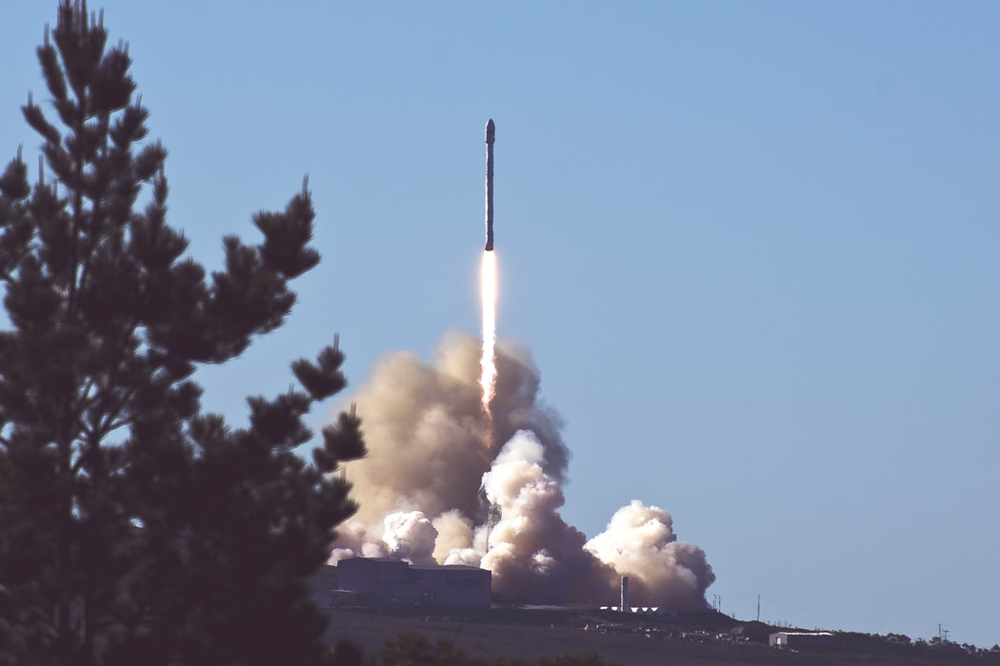
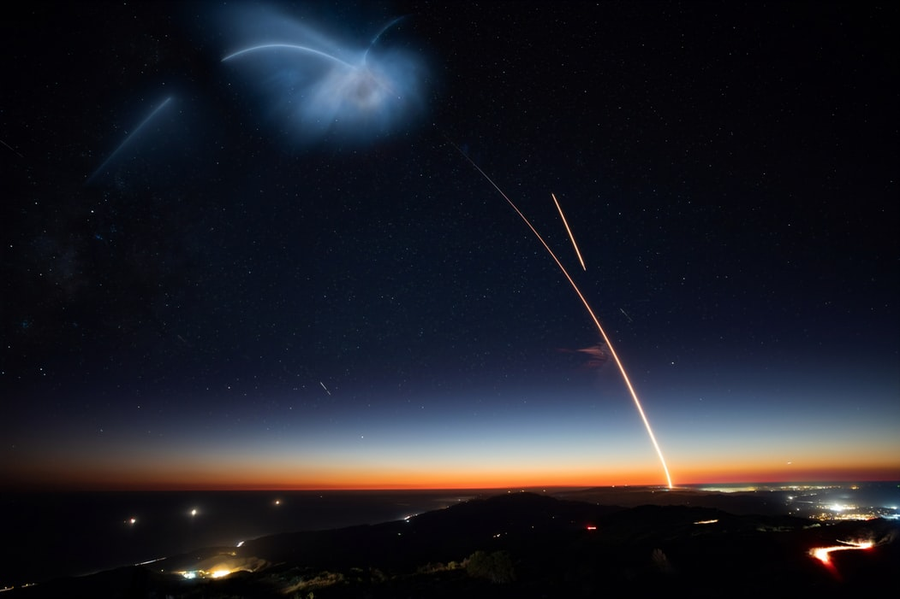

SpaceX is targeting Thursday, September 3 at 8:46 a.m. EDT, 12:46 UTC, for launch of its twelfth Starlink mission. which will launch 60 Starlink satellites to orbit. Falcon 9 will lift off from Launch Complex 39A (LC-39A) at Kennedy Space Center in Florida. A backup opportunity is available on Friday, September 4 at 8:24 a.m. EDT, 12:24 UTC.Falcon 9’s first stage previously supported launch of the GPS III Space Vehicle 03 mission in June 2020. Following stage separation, SpaceX will land Falcon 9’s first stage on the “Of Course I Still Love You” droneship, which will be stationed in the Atlantic Ocean.
In September 2016, Musk unveiled the Interplanetary Transport System—subsequently renamed Starship—a privately funded launch system to develop spaceflight technology for use in crewed interplanetary spaceflight. In 2017, Musk unveiled an updated configuration of the system which is intended to handle interplanetary missions plus become the primary SpaceX orbital vehicle after the early 2020s, as SpaceX has announced it intends to eventually replace its existing Falcon 9 launch vehicles and Dragon space capsule fleet with Starship
